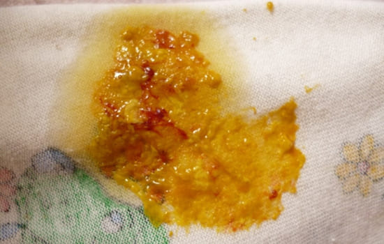
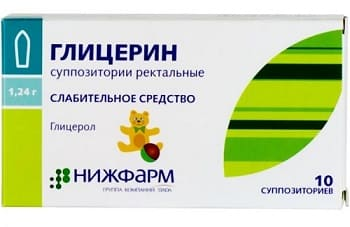

Две наиболее частых причины появления прожилок крови в кале ребенка:
Ректальная (анальная) трещина. Это крошечный разрыв слизистой прямой кишки. Подсказка, что причина именно в ней, — прожилки ярко-красной крови. Часто врач может увидеть трещину при осмотре прямой кишки ребенка. Обычная причина ректальных (анальных) трещин — запор.
Пищевые аллергии. Вторая по частоте причина появления крови в кале — кровотечение из-за раздражения слизистой кишечника при пищевой аллергии. Обычно виновниками являются молоко и пшеница. Что кровотечение связано скорее с пищевой аллергией, может подсказать более темный, иногда даже черный цвет крови — из-за того, что кровоточат верхние отделы кишечника. Кроме того, стул при этом более водянистый, неоформленный, содержит больше слизи и отличается зеленоватым цветом. При ректальной трещине испражнения более плотные, оформленные, без слизи и зелени.
СОВЕТ ДОКТОРОВ СИРС: СИМПТОМ «МИШЕНИ» Поскольку при пищевой аллергии каловые массы имеют кислую реакцию, подсказкой, что у вашего ребенка пищевая аллергия, может служить раздражение кожи вокруг заднего прохода из-за частых дефекаций кислыми каловыми массами: кожа выглядит обожженной. Если вы видите такую «мишень» и у вашего ребенка есть другие признаки пищевой аллергии (боль в животе, вздутие, высыпания на коже и стул с описанными выше свойствами), обязательно расскажите об этом врачу. |
КОГДА ВОЛНОВАТЬСЯ И ЧТО ДЕЛАТЬ
Из-за ректальной (анальной) трещины младенцы редко теряют крови столько, чтобы это привело к развитию анемии. Помимо применения послабляющих методик, нанесите на кожу вокруг анального отверстия глицерин или другую смягчающую мазь, чтобы облегчить прохождение кала при дефекации. Можно использовать глицериновые свечи.

В любом случае наличие крови в стуле ребенка является показанием для обращения к врачу.
К потере крови при кровотечении из-за пищевой аллергии следует относиться более серьезно, так как при этом ребенок может потерять столько крови, что может развиться анемия.
Здоровье ребенка от докторов Сирс / Сирс У. и др.